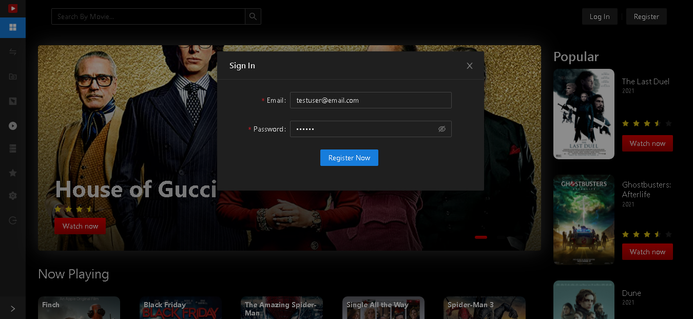
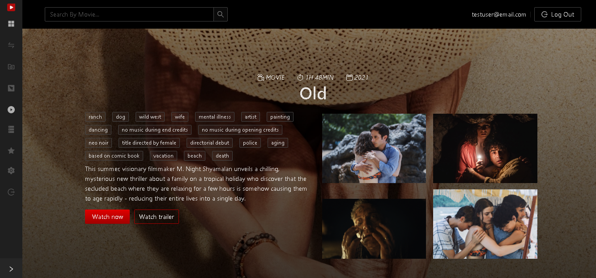
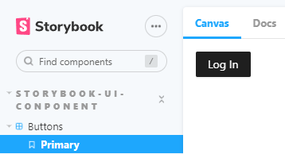
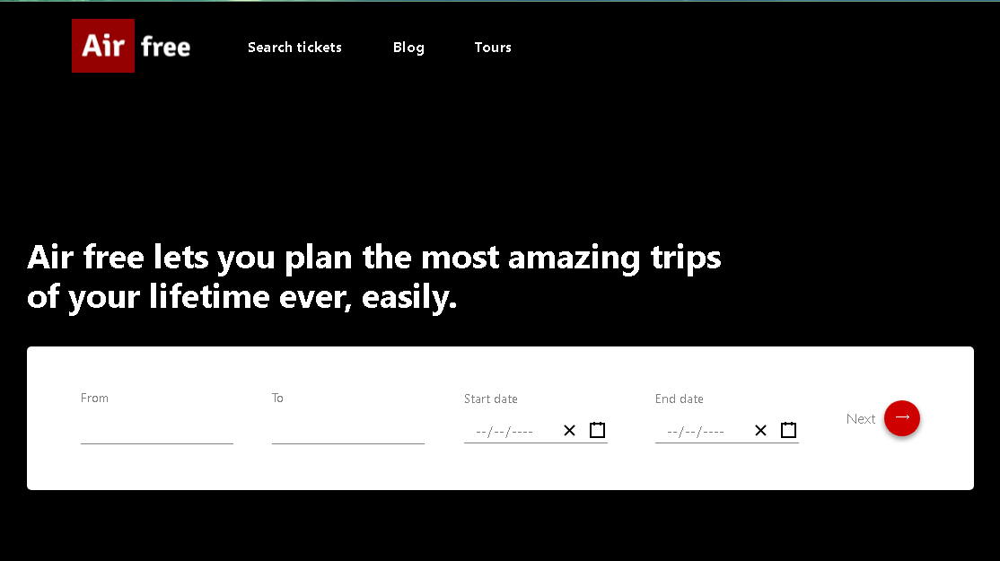
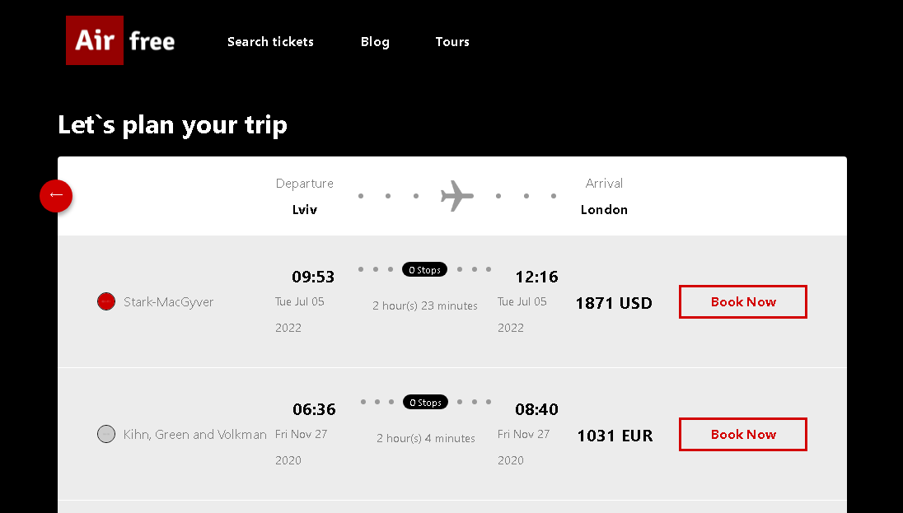
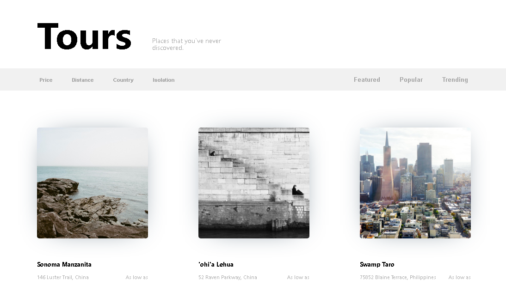

AndrewKaenko
AndrewKaenko
 Andrew Kaenko
Andrew Kaenko
skills
Front-End
React
Redux
TypeScript
styled-components
AntDesign
Firebase
Storybook
JavaScript
HTML
CSS
Adobe Photoshop
Education
frontend development
Academy STEP
2019 - 2020
College
Mining College of Kryvyi Rih Technical University
2014 - 2018
School
Secondary school №121 of Kryvyi Rih
2005 - 2014
Expirience
Software engineer • atTech
nov 2012 — dec 2021Worked on service for watching movies and TV series. Used React/Redux with TypeScript and styled-components. Connected with Storybook, and covered half of aplication components with tests.



Trainee software engineer • atTech
sep 2021 — nov 2021Together with the team, implemented service for flight tickets search. Tech stack: react, styled-components.



Engineer • IVP
aug 2018 — sep 2021Engineer of Automated Control Systems for Technological Processes at industrial objects.